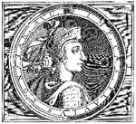

Katolik bir anneden ve pagan bir babadan doğan Hippolu Saint Augustine (354-430) en sonunda otuzlu yaşlarının başında Hıristiyanlığı kabul edene kadar dini bir arayış içerisinde olmuştur. Hıristiyanlığa geçisinin ardından Augustine bir piskopos olarak görev yapmış ve kilise tarihindeki en etkili teologlardan biri olmuştur.
Augustine’in ünlü otobiyografisi Confessions’a (İtiraflar) göre varlıklı bir ailenin çocuğu olarak Tagaste şehrinde doğdu. Bu şehir günümüzde Cezayir sınırları içerisinde kalan Kuzey Afrika’daki bir Roma eyaletindeydi. Henüz genç bir delikanlıyken Kartaca’ya gitti ve karşılaştığı renkli hayatın cazibesine dayanamayıp kısa zamanda bu hayatın bir parçası oldu. Confessions’da yazdığına göre seks, alkol ve hırsızlık gibi büyük günahlara ve “cinsel kirliliğe” tanık olmuştu.
Augustine’in keşfettiği şehvet ve ahlaksızlıklar onun hayatın anlamını bulamamaktan ileri gelen açlığını doyurmaya yetmedi. Önce Mani dinini benimsedi. Ne var ki kısa sürede düş kırıklığına uğradı. Hıristiyanlık onda merak uyandırmaya başlamıştı. Bir İtalyan şehri olan Milan’da retorik öğretmeni olarak çalışmaya başladı. Burada Katolik düşünürlerle diyalog kurma fırsatını bulacaktı.
Augustine’in tam olarak Hıristiyanlığı kabul etmesi ve geçmişini geride bırakması uzun yıllar aldı. “Tanrı bana erdem bahşetsin,” diye dua ediyordu, “ama şimdi değil.” Sonunda 386 yılında Hıristiyan oldu.
Afrika’ya dönünce Akdeniz sahilindeki bir şehir olan Hippo Regius’a piskopos oldu. Burada en önemli kitaplarını yazdı. Bunların arasında Confessions ve temel Hıristiyan prensipleri hakkında bir eser olan The City of God (Tanrı Şehri) da yer almaktadır.
Augustine’in yazıları Katolik doktrininin vaftiz, ilk günah, ve meşru savaş gibi konularda netleşmesine katkı sundu. Platon (MÖ 429-347) ve Aristo (MÖ 384-322) ile İncil’i uzlaştırmaya çalışarak antik çağ felsefesi ile Hıristiyanlık arasında bir köprü kurmaya çalıştı. Gençliğindeki seks maceralarına rağmen, Augustine sonraki hayatında kadınlar ve seks konusunda son derece katı bir muhafazakar oldu.
Tarihsel açıdan Augustine’in yazıları Hıristiyan düşüncesinin giderek daha sofistike bir hale geliş sürecini yansıtmaktadır. Bir zamanların yeraltı dini şimdi Roma’nın resmi dini olmuştur. İlginç bir biçimde Augustine’in kaderi Roma’nın çöküşünde yaşananlarla da paraleldir: 430 yılında Hippo kuşatması sırasında ölmüş, kent kısa süre sonra Vandallar tarafından ele geçirilmiştir.
Ek Bilgiler
1- Augustine, Hıristiyan olmadan önceki hovarda yaşamı nedeniyle bira üreticilerinin koruyucu azizi olarak kabul edilmiştir.
2- Augustine’in memleketi olan Hippo Regius günümüzde Annaba adıyla bilinmektedir. Cezayir’in Akdeniz sahilinde büyük bir şehirdir.
3- Augustine Vatikan tarafından tanınan otuz üç kilise doktorundan biridir.
Constantine
İmparator Constantine (272-337) Hıristiyanlığı Roma’da yasallaştıran hükümdardır. Böylece yılların baskısı son bulmuş ve yasak bir inancın Avrupa’nın en büyük dini haline gelmesinin önü açılmıştır. Constantine aynı zamanda imparatorluğun bin yıllık başkentini Roma’dan doğudaki Constantinople’a (İstanbul) taşımıştır.
Constantine o zamanlar Naiussus adıyla bilinen bir Roma eyaleti olan Sırbistan’da doğmuştur. İmparator Diocletian (245-316) zamanında imparatorluğun yönetim işlerinden dört kişi sorumluydu. Bunlardan biri Constantine’in babası olan Constantius Chlorus’tu (250-306). Constantius İskoçya’da savaşırken ölünce yerine oğlu Constantine geçti.
Dört yönetici arasındaki gerilim çeşitli savaş ve isyanlara neden oldu. Bu olaylar Diocletian’ın görevi bıraktığı 305 yılından Constantine’in rakiplerini yenilgiye uğratıp tüm Roma İmparatorluğu’nun kontrolünü eline geçirdiği 325 yılına kadar sürdü. Constantine 330 yılında imparatorluk başkentini Constantinople adını verdiği Byzantium’a taşıdı.

Constantine’in 313 yılında yayınladığı “Milan Buyruğu” Hıristiyanlar’a dinlerini özgürce yaşama ve mülk edinme hakkı veriyordu. İmparatorun kendisi de bir yıl önce Hıristiyan olmuştu. Milvian Köprüsü Savaşı’ndan önce gökyüzünde bir haç gördüğünü söylüyordu. Bu muharebe, iç savaşta zafer kazanmasını sağlayan önemli bir dönüm noktası olmuştu. Buyruk, Roma siyasetinde çok ani bir değişikliğin habercisiydi. Zira Hıristiyanlar’ı hedef alan saldırılar sadece birkaç yıl önce son bulmuştu.
Constantine gerçekte acımasız bir liderdi. 326 yılında yaşanan bir olayda oğlunu zehirleyerek, karısını ise buharlı banyoya kilitleyerek öldürmüştü (onları neden öldürdüğü halen kesin olarak bilinmemektedir). İmparator 337 yılında öldü. Yaptığı hukuksal değişimler Roma’nın Hıristiyan bir devlete dönüşmesinin önünü açtı.
Ek Bilgiler
1- Constantine’in büyük bir zafer kazandığı ve gökyüzünde bir haç gördüğü Milvian Köprüsü bugün hâlâ kuzey Roma’da bulunmaktadır. MÖ 1. yy’da yapılan taş köprü türünün en eski örnekleri arasında yer almaktadır.
2- Constantinople adı 1453 yılında Bizans İmparatorluğu’nun çöküşünden sonra yaygın kullanımını kaybetmiştir. Şehir 1930 yılında resmen İstanbul adını almıştır. Türkiye, 1923 yılında cumhuriyet ilan edilince başkenti Ankara’ya taşımış ve böylece 1500 yıldır çeşitli dünya imparatorluklarına ev sahipliği yapan İstanbul başkent olmaktan çıkmıştır.
3- Hıristiyanlık yasallaştıktan sonra yayılmaya devam etmiş ve Roma’nın hakim dini olmuştur. 380 yılında resmi din olarak kabul edilmiş, takipçilerinin zulüm görmelerinin üzerinden bir asırdan az bir zaman geçmiş olmasına rağmen 392 yılında resmen izin verilen tek din haline gelmiştir.